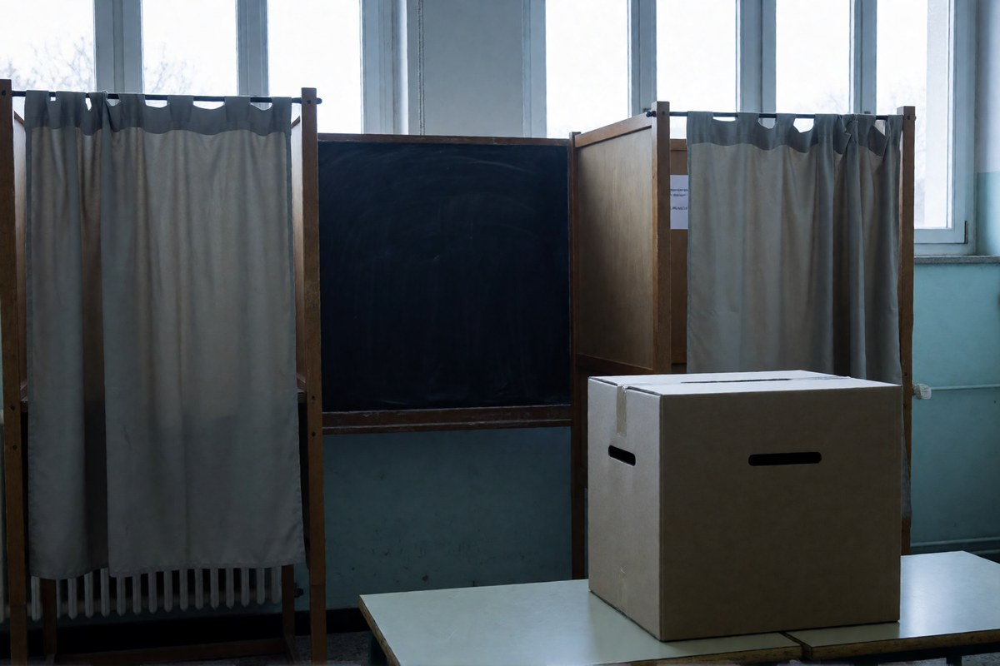

Politica italiana · 19 novembre 2026
Si vota in primavera? L'editoriale del Riformista

Sul Riformista Antonio Picasso sostiene che a Giorgia Meloni convenga andare alle urne appena l'Italia uscirà dalla procedura europea sul deficit. L'editoriale per gli abbonati, con il commento dell'autore e i tre dubbi che restano.
di Franco Zanghì
«Giorgia Meloni ci porterà a votare già in primavera?» La domanda, conti alla mano, la pone Antonio Picasso sul Riformista del 18 novembre, e il suo ragionamento parte da un posto dove la politica di solito non guarda: il bilancio dello Stato.
I fatti
L'Italia è ancora dentro la procedura europea per deficit eccessivo, ma potrebbe uscirne già dalla prossima primavera. Il 17 novembre il commissario europeo all'Economia, Valdis Dombrovskis, ha detto che il Paese può lasciare la procedura in primavera, mentre le previsioni della Commissione danno il disavanzo al 2,9 per cento. Al vertice di maggioranza, racconta Picasso, si è parlato di migliorare la manovra su sanità, scuola, sicurezza e pensioni, ma soprattutto è stata ribadita la volontà di tenere i conti in ordine: è la linea del ministro dell'Economia Giancarlo Giorgetti, che il Riformista riassume con una sua frase, «Ragazzi, poche storie. I soldi non ci sono».
La tesi del Riformista
Per Picasso l'uscita ufficiale dalla procedura sarebbe un «ticket elettorale» che pesa molto più della fine naturale della legislatura, prevista dopo l'estate del 2027. Andare al voto fra aprile e maggio permetterebbe al governo di ripartire da capo, di preparare per la fine del 2027 una manovra più generosa con il timbro di Bruxelles e di intestarsene il merito. L'editoriale si chiude con un avvertimento: «C'è solo una condizione non da poco: vincere le elezioni».
Il commento
Su una cosa Picasso ha ragione: se l'Italia esce dalla procedura non è un dettaglio da ragionieri, è la prova che si può governare senza scaricare debiti sulle spalle di chi viene dopo, e su questo Meloni e Giorgetti hanno tenuto la barra dritta anche quando non era popolare.
Sulla corsa alle urne, però, restano tre dubbi. Il primo: la forza di questo governo è la durata, e interromperla per convenienza regalerebbe agli avversari l'unico argomento che oggi non hanno, il calcolo. Il secondo: gli italiani votano con la bolletta in mano, non con il comunicato di Bruxelles. Il terzo lo ricorda la storia recente: nell'estate del 2019 chi aprì una crisi per andare al voto si ritrovò all'opposizione.
Picasso lo scrive da sé: bisogna vincere. E le elezioni si vincono anche mostrando di non averne paura, arrivando alla scadenza con i conti in ordine e le promesse mantenute. Quella carta, a Palazzo Chigi, conviene tenerla in mano: a volte la mossa migliore è non giocarla.
Fonti
- Antonio Picasso, l'editoriale sul voto anticipato e l'uscita dalla procedura per deficit, Il Riformista, 18 novembre 2026
- ANSA, «La Ue stima il deficit al 2,9%, l'Italia vede l'uscita dalla procedura», 17 novembre 2026
- Euronews, «Italia verso l'uscita dalla procedura d'infrazione Ue, ma inflazione e debito restano i rischi principali», 17 novembre 2026
- Agenzia Nova, «Dombrovskis: l'Italia potrebbe uscire dalla procedura per deficit già nella primavera del 2027»
Articolo tratto dall'editoriale per gli abbonati del canale Franco Zanghì del 19 novembre 2026, costruito sull'editoriale di Antonio Picasso pubblicato dal Riformista il 18 novembre 2026.